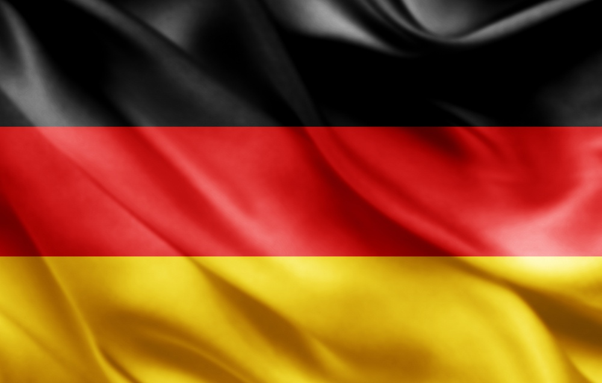
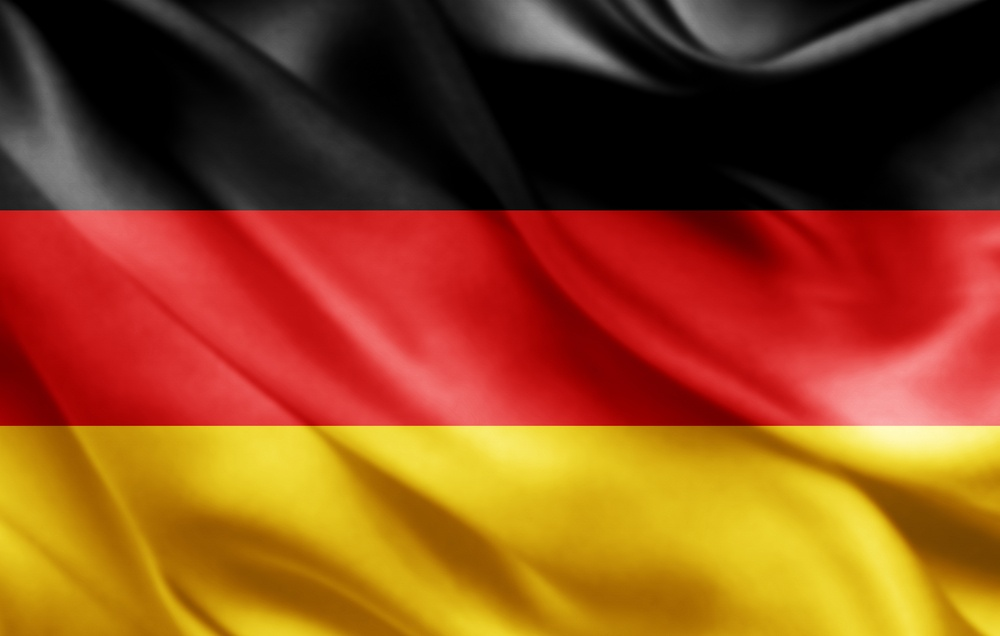

6 pontos turísticos na Europa que todo viajante precisa conhecer
Para te ajudar decidir exatamente onde ir, selecionei os 6 principais pontos turísticos na Europa.
Coliseu em Roma, Itália.
O Coliseu de Roma, cujo nome oficial é Anfiteatro Flaviano, começou a ser construído em 72 d.C e demorou oito anos para ficar pronto.
Tinha capacidade para 70 mil pessoas e oferecia espetáculos para distrair a população.
Torre Eiffel em Paris, França.
A sua construção foi em 1889 para celebrar os 100 anos da Revolução Francesa, e tem 325 metros de altura e 1.665 degraus.
Além de uma vista incrível que pode ser apreciada de diferentes maneiras, há vários restaurantes em torno da Torre Eiffel para aproveitar a culinária do país.
Portão de Brandemburgo em Berlim, Alemanha.
Hoje sinônimo de paz e unidade, o Portão de Brandemburgo já foi símbolo de divisão entre a Alemanha Oriental e a Ocidental, durante a Guerra Fria.
O monumento de 26 metros de altura, construído entre 1788 e 1791.

Sagrada Família em Barcelona, Espanha
Foi construída pelo famoso arquiteto Antoni Gaudì. Ela é uma igreja com enorme quantidade de detalhes que ainda não foi finalizada.
A igreja está em construção há 135 anos e deve ficar pronta em 2026. Entretanto, é possível visitá-la e conhecer o seu interior.
Torre de Belém em Lisboa, Portugal.
A edificação foi construída entre 1514 e 1520 às margens do Rio Tejo.
Começou como projeto de construção defensiva na época de Dom João II, depois substituiu a nau artilhada ancorada nas águas do Rio Tejo durante o reinado de Manuel I e foi utilizada como aduaneiro, sinalização, farol e até masmorra para presos políticos nos anos seguintes.

Big Ben em Londres, Inglaterra.
O relógio com aproximadamente 13 toneladas. fica instalado no Parlamento Inglês, onde é possível fazer uma visita às suas divisões gratuitamente.
Além disso, também é possível fazer um passeio guiado pelo interior do Big Ben para conhecer a sua história e a importância dele para o país.